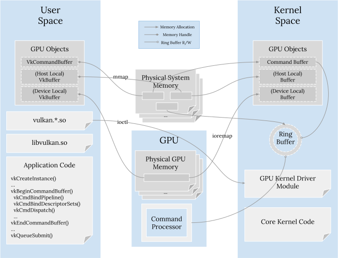

Recently I have been working on a library that needs to directly interact with GPU kernel drivers from various vendors on Android/Linux systems. Compared to various GPU APIs, information at this level is quite sparse; so it is not a straightforward task, to say the least, and ends up requiring me to piece multiple sources together to figure out the details. So I am logging these driver internals and resources down in case it can be useful to others that are interested in these low-level bits.
I’ll mostly be talking about the components directly involving GPU drivers in this blog post. The full Linux’s graphics stack, including the window system and libraries, is super complex. If you’d like to be brave and understand the full picture, you can refer to great writeups and wiki pages. Even with the reduced scope, there are an overwhelming amount of details. So I’ll just cover the major concepts and ideas, with proper embedded links in case you are curious and want to learn more.
A GPU driver is split into two parts: a user mode driver and a kernel mode driver.
User Mode Driver
As the name suggests, user mode drivers run in the address spaces of applications. They are where the majority of the magic happens. An application invokes GPU API calls that are implemented by the user mode driver, which maintains the application context, validates API arguments (for non-explicit APIs like OpenGL, OpenCL, etc.), translates the API calls to much lower and simpler commands specific to the GPU, and communicates the workload to the kernel mode driver. Clearly these are all heavyweight operations that’s better to stay out of the mission critical kernel.
Shared libraries
User mode drivers are generally in the form of shared libraries. For example,
for Adreno/Mali GPUs in Android systems, we can find vulkan.*.sos (the
exact name varies per the device) under the /vendor/lib64/hw/ directory for
the Vulkan API.1 This allows the same user mode driver to
be mapped to many applications' address spaces.
Though typically an application is not expected to directly link against the
vendor-specific shared library; instead the application should link against a
loader library. For example, for Vulkan, that’s libvulkan.so, the Vulkan
loader. The loader library exposes all API calls and dispatches
them to the underlying vendor-specific user mode driver. The vendor-specific
library may or may not directly expose API calls (actually they are advised not
to in order to avoid symbol collisions and other issues), so the loader
discovers the symbols from the vendor driver with a specific
contract.2
In general, if we have some logic and we need to decide whether to put in the user or kernel mode driver, it should be put in the user mode as much as possible. Being in the user mode means we can enjoy all the benefits of, well, being in the user mode: less buggy and more stable kernels, more utilities to leverage and depend on, much easier to update, better debugging experience (as the user mode driver is just a shared library), and others.
Kernel Mode Driver
Once the user mode driver converts high-level API calls into low-level vendor-specific commands, it hands them over to the kernel mode driver, which is part of the Linux kernel and shares the kernel address space.
Like other kernel components, the kernel mode driver manages unique resources (here, the GPU hardware) and provides services to all upper level users. It handles resource allocation requests from the user mode driver, which is on the application’s behalf. Additionally, it also performs many routine tasks like GPU device initialization, mode settings, watchdog timers, and interrupts.
Memory management
Security and isolation are also concerns for GPUs. As a shared resource used by many applications, obviously we don’t want one application to be able to access other applications' data. For this, GPUs also use virtual addresses and memory management units (MMU, called IOMMU for Adreno and SMMU for Mali) to map virtual addresses to physical memory. The virtual address is chosen by the kernel mode driver and the kernel mode driver configures the GPU to use different page tables for different applications so that they are isolated. Hence, for the same physical memory page shared between the kernel mode driver and the application, there are two virtual addresses for it in two different virtual address spaces. The kernel mode driver uses the GPU’s IOMMU/SMMU to translate, while the application uses the CPU’s MMU to translate.
Command buffer management
Aside from supervising memory, the kernel mode driver also manages the main command buffer, which is the buffer really shared with the GPU processor. It’s commonly a ring buffer, still in system memory. We know that a ring buffer has a read pointer and a write pointer. The read pointer is used by the GPU processor for fetching the next commands for execution; the write pointer is used by the kernel mode driver for queuing more workloads.
Command buffers created by a specific application are just placed in normal system memory allocated to the user mode driver; the kernel mode driver needs to copy them to the ring buffer. This allows many applications to prepare workloads simultaneously without always contending for some lock. Well, actually not copy as the application generated command buffers can be large. So the kernel just inserts “indirect calls” into those command buffers in the ring buffer.
So in summary in ring buffer, we can see GPU setup and teardown commands, context switching commands, and “indirect calls” to application-specific command buffers. There are also others (e.g., for performance counters) that I won’t go into details.
Driver implementation
Next let’s talk about how kernel mode drivers are implemented in the kernel.
Loadable kernel modules
GPU kernel mode drivers nowadays are implemented as loadable kernel modules (LKMs). Using LKMs “isolates” the device drivers from the Linux core to some extent, as now the kernel core can kill unresponsive drivers and crashes in a driver won’t blow up the whole Linux kernel. (But still they are in the same address space.) Also LKMs enable hardware hot swapping: the kernel can dynamically load/remove the corresponding driver on hardware plugging/unplugging. This isn’t very relevant in the context of Android, though, as we typically have a fixed set of hardware that never changes.
For Android, we can describe the whole hardware hierarchy to the Linux kernel via a static Device Tree Source (DTS), which is compiled down to a binary Device Tree Blob (DTB) and can be fed into the Linux kernel via bootloader at kernel startup time. But still, GPU drivers use the same LKM mechanism for uniformity and simplicity in the kernel.
Implementing a LKM basically boils down to filling out some “hook” functions.
Minimally, module_init() and module_exit() for
LKM setup and teardown. Of course, only these two hooks won’t really get us far;
we’ll need to support more kernel system calls to make the driver powerful,
especially for something as complex as GPUs.
System calls
In Linux resources are typically represented as files to userspace applications;
the kernel has a Virtual File System multiplexing file descriptors and
dispatching to underlying implementations. GPU devices follow this principle.
Device files on Linux systems are under the /dev directory. For example, for
Adreno and Mali GPUs, the corresponding files are something like /dev/kgsl-3d0
and /dev/mali0, respectively. (Again, the exact name can vary per the GPU
product and driver implementation, especially for Mali devices.)
The file_operations struct declares common operations that
can be performed on files, e.g., open, close, read, write, mmap:
struct file_operations {
int (*open) (struct inode *, struct file *);
ssize_t (*read) (struct file *, char __user *, size_t, loff_t *);
ssize_t (*write) (struct file *, const char __user *, size_t, loff_t *);
int (*mmap) (struct file *, struct vm_area_struct *);
// ...
};
These operations have corresponding system calls: open(2)3,
close(2), read(2), write(2),
mmap(2). Our GPU device driver can implement these operations to
support those system calls on the device file. It enables support for broader
functionalities in the kernel mode driver. For example, now the application
can request memory via mmap(2). But the list of operations defined in
file_operations is finite and far from satisfying GPU’s needs. In fact, each
GPU might have its own quirks. So that comes to the ioctl(2)
system call.
ioctl(2) is intended for device-specific operations that cannot be expressed
by the standard system calls. Each device is free to define its own list of
ioctl commands and format. ioctl essentially works as device-specific
“extensions” to system calls. This is a perfect fit for GPU devices as we can
have a quite large API surface area, e.g., for Adreno and
Mali.
GPU devices typically implement open and close for opening/closing the
device, mmap for sharing data between the application (which uses the user
mode driver as its deputy) and the kernel mode driver, and ioctl for various
controls.
Driver frameworks
Actually, it’s so common to see devices of similar categories. GPU drivers from all vendors have similar basic needs. Likewise for other devices. So in Linux, there are quite a few driver frameworks as scaffolding to provide common helpers. For example, all PCI devices can just utilize the PCI driver framework to handle common needs like device enumeration, driver binding, and others.
Since v2.6, Linux unifies various driver models into one Kernel Device Model, which handles all buses, devices, and device drivers. A device must be attached to some bus, and must be bound to and driven by a driver. One common abstraction for everything again. This is fine for discrete GPUs where they attach to the system via PCI Express bus. Actually, we can utilize the PCI driver framework for it, for example, for AMD GPUs and NVIDIA GPUs. (They actually use more driver frameworks, like DRM, which I won’t go into details here. You can follow the links to read more.)
But what about Android, where GPUs are in the same SoC as CPU, ISP, etc.? There are no physical buses at all! Well, the kernel provides the platform driver framework for them. It provides a pseudo platform bus to connect devices on busses with minimal infrastructure. Normally drivers for SoC functionality blocks are written as platform drivers; this includes GPU drivers like Adreno and Mali.
Userspace interaction
System calls are one way to interact with the kernel mode driver, but not the
only way. As explained previously, Linux introduced a unified Kernel Device
Model in v2.6. Together with it, sysfs was introduced to expose
details inside the Kernel Device Model. Sysfs is a pseudo file system that is
normally mounted at /sys and there are multiple subdirectories inside it,
providing different “views” into the Kernel Device Model. For example,
/sys/bus/ organizes all devices and drivers according to the buses they are
attached to, and /sys/devices/ lists all devices.
/sys/devices/platform/ is an interesting directory here. Recall that GPU
drivers are platform drivers. So we can find attributes exposed by GPU drivers
here. For example, /sys/devices/platform/soc/*.qcom,kgsl-3d0/kgsl/kgsl-3d0
(for Adreno) and /sys/devices/platform/*.mali (for Mali) can contain GPU
frequency, power, DVFS attributes, among others. Once the Android device
is rooted, you can write those pseudo files to control those parameters, like,
for benchmarking purposes.
Showing User and Kernel Mode Drivers Together
Okay, this concludes the introduction to both user and kernel mode drivers. Time to visualize important aspects with one drawing 😊:

Driver Resources
There are quite a few vendors, and for each of them, actually there can exist multiple drivers, some proprietary and some open source. Though, due to GPL, even proprietary ones are required to release the kernel mode drivers. So we can indeed understand the internals.
But (yeah), these kernel mode drivers from the original vendors may not exist in the upstream Linux kernel tree. Actually, both Adreno and Mali kernel mode drivers are outside; they are provided to Android device OEMs and OEMs release them in their own way. For example, Samsung has its own open source website and Xiaomi releases via GitHub. You can search for other OEMs. The code released by a particular OEM may be customized by the OEM, but they are unlikely to change the main logic.
What’s in the upstream Linux kernels are open source kernel mode drivers for these vendors. They work closely with the Mesa project, which hosts various open source user mode drivers. Mesa is another big topic that I won’t go into details here.
Anyway, here is a table summarize some of the kernel mode drivers4 for your convenience:
| GPU | Proprietary Driver | Open Source Driver |
|---|---|---|
| ARM Mali | mali kbase | lima, panfrost |
| Qualcomm Adreno | kgsl | msm |
- KGSL means Kernel Graphics Support Layer.
- Lima is for Mali Utgard GPUs. The user mode OpenCL driver for Lima is also named as Lima.
- Panfrost is for Mali Midgard and Bifrost GPUs. (There are plans to support Mali Valhall GPUs later.) The user mode OpenCL driver for Panfrost is also named as Panfrost. The user mode Vulkan driver is PanVK.
- The user mode OpenCL driver for msm is Freedreno. The user mode Vulkan driver is Turnip.
The open source projects are great resources not only because they give us details about how drivers are implemented but also GPU architecture details. For example, Freedreno has wiki pages about Adreno ISA and A6XX series compute unit details. Panfrost has docs about Mali Utgard, Midgard, and Bifrost ISAs. Huge thanks to all the participating open source developers!
-
An interesting aspect about Mali GPUs is that they have a monolithic shared library to support all of OpenCL, OpenGL, and Vulkan. The monolithic library is
/vendor/lib64/egl/libGLES_mali.so. Thevulkan.*.solibrary under the/vendor/lib64/hw/directory is just a symlink to it. ↩︎ -
The loader is mainly for handling the case where we have multiple implementations in the same system. That’s actually typical for laptops nowadays given we can have an integrated GPU for energy efficiency and a discrete GPU for high performance. That’s not the case for Android devices, where we commonly have no more than one GPU. So in a sense the loader is just overhead. And it can cause other issues. There was a bug in Android 10 causing the Vulkan loader to be inaccessible in the
adbenvironment under/data/local/tmp, which is very common for developing purposes. One way to work around the bug is to symlink the vendor-specific library aslibvulkan.sounder/data/local/tmp. However, it would require to mimic the loader-driver contract to discover the API symbols from the driver. ↩︎ -
I’m using the
(2)suffix here to follow man page conventions. Man pages are organized into sections, which you can useman manto check them. Section #2 means system calls. ↩︎ -
Links to proprietary drivers point to code released by Samsung for the Galaxy S21 series. ↩︎